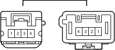

Наименование
Жгут проводов правого переднего сиденья № 2 и жгут проводов правого переднего сиденья (правое переднее сиденье)
Код
ea2
Каталожный номер
90980-12733/90980-12732
Цвет
Белый
Технические характеристики

Расположение
Электропроводка в сидении (для моделей с левосторонним рулевым управлением и передними сиденьями с электроприводом)
Электропроводка в сидении (для моделей с правосторонним рулевым управлением и передними сиденьями с электроприводом)
Система
Сиденье с электроприводом (сиденье переднего пассажира в моделях с левосторонним рулевым управлением)
Сиденье с электроприводом (сиденье водителя в моделях с правосторонним рулевым управлением без функции сохранения положения сиденья)